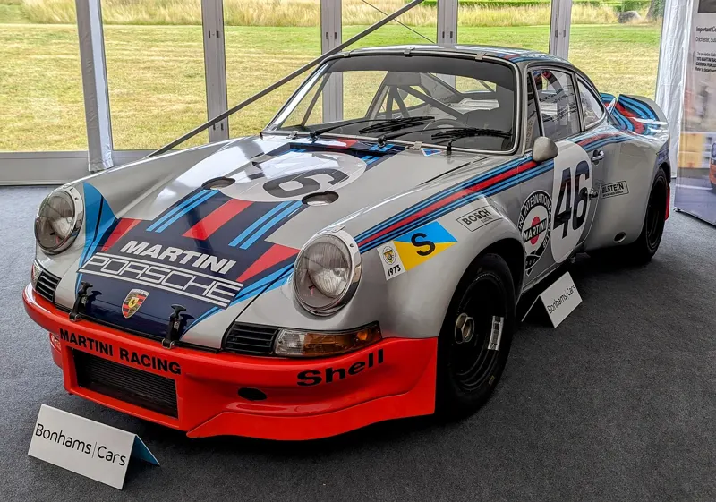

OFFICIAL / PORSCHE
포르쉐는 미래에도
포르쉐일 수 있을까.
새로운 비전 모델 Mission S. 브랜드의 다음 디자인 언어와 미드 엔진 슈퍼스포츠카 플랫폼이 향하는 곳.

자동차의 오늘을 읽는 또 하나의 시선.
원문 뉴스 검색 ↗ JAGUAR / THE NEW DESIGN LANGUAGE
JAGUAR / THE NEW DESIGN LANGUAGEType 00의 선언에서 새로운 4도어 GT까지.
Jaguar Type 01의 긴 비례와 디자인 언어.
ORIGINAL HEADLINES / SOURCE-LINKED
세계의 자동차 소식을 원문으로 만납니다. 아래는 해외 발행처의 영어 헤드라인입니다.
날짜가 명시된 공식 발표를
한국어 해설로 읽습니다.
새로운 비전 모델 Mission S. 브랜드의 다음 디자인 언어와 미드 엔진 슈퍼스포츠카 플랫폼이 향하는 곳.
Porsche Engineering과 Porsche Digital이 ‘Porsche Technologies’로 역량을 모은다. 출범 목표는 2027년 2분기 초다.
왜 중요한가 · 차체 설계와 디지털 경험을 함께 개발하려는 움직임이다. 통합 완료가 아닌 향후 계획으로 읽어야 한다.
공식 본문 대조 · AI 보조 한국어 요약 · 10.28 확인 공식 원문과 일정 확인 ↗위 소식은 날짜가 명시된 공식 발표 해설입니다. 자동 수집된 해외 헤드라인은 뉴스 인덱스에서 별도로 읽습니다.
 FERRARI / 1987
FERRARI / 1987공기와 열, 그리고 1980년대의 야심. ↗
사진: MrWalkr · CC BY-SA 4.0 · WebP 변환
PORSCHE / 1973레이싱의 흔적과 911의 지붕선. ↗
사진: Calreyn88 · CC0 1.0